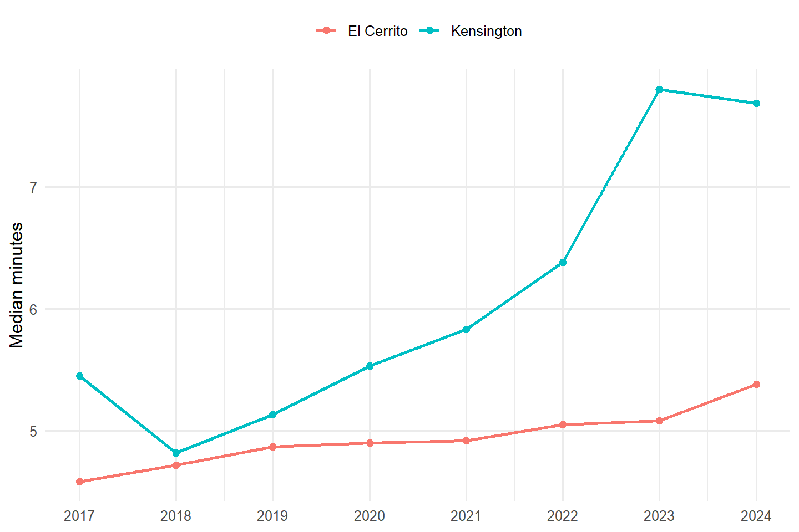
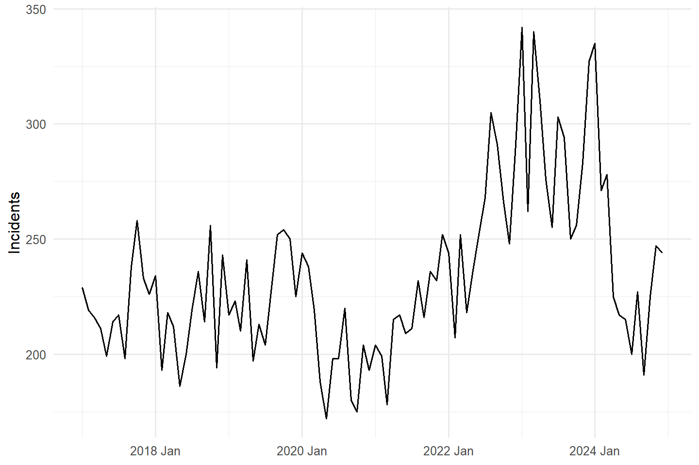
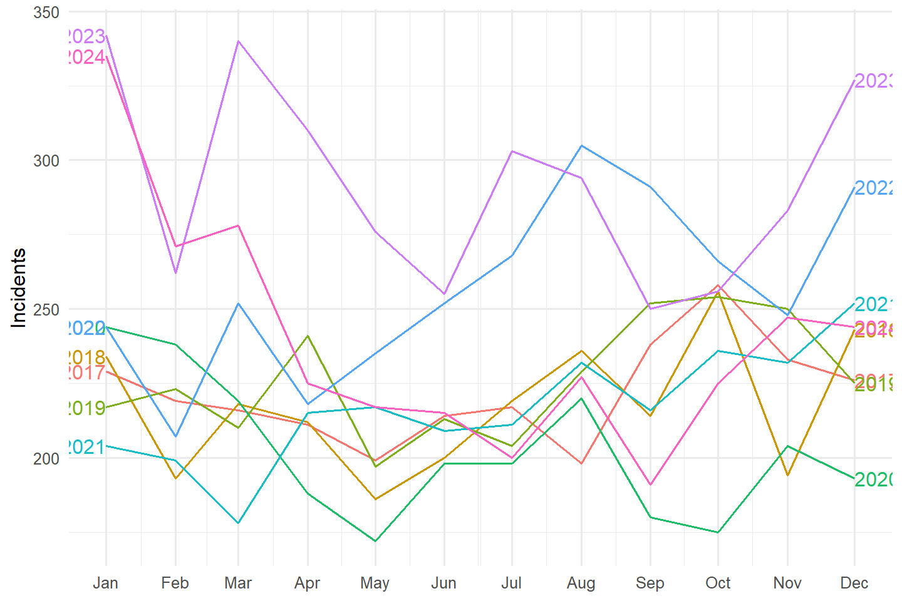
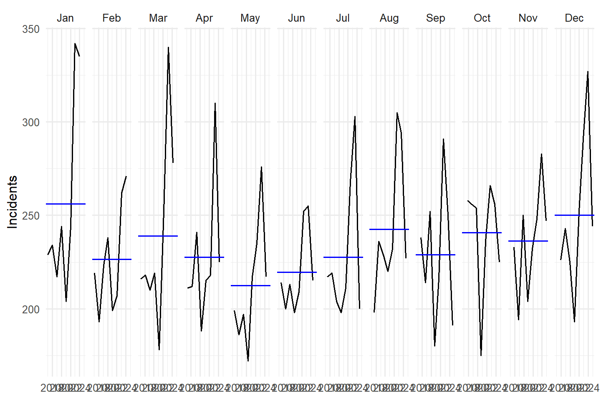
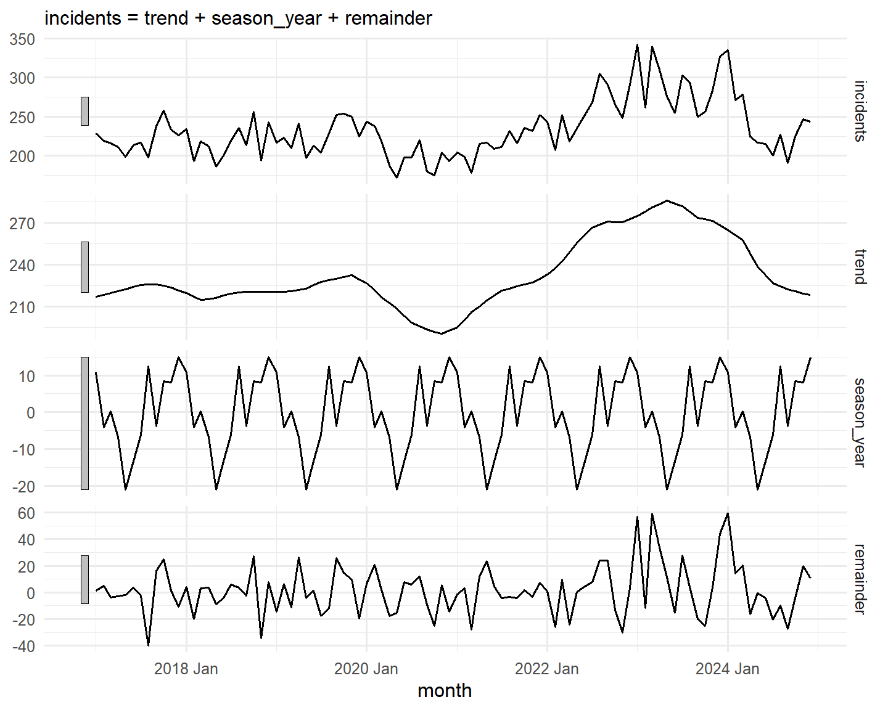
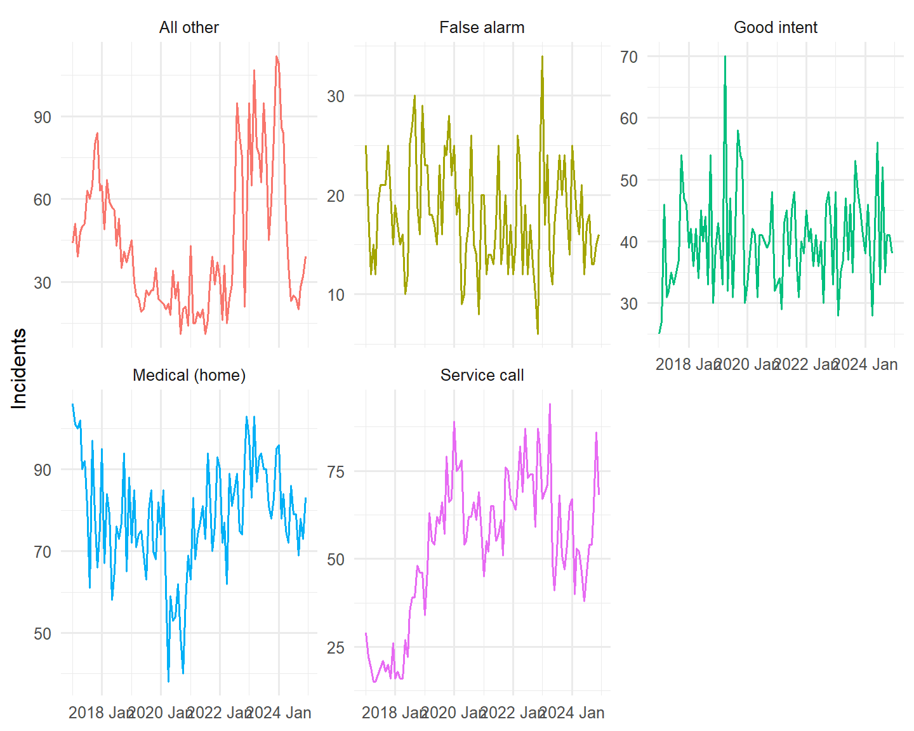
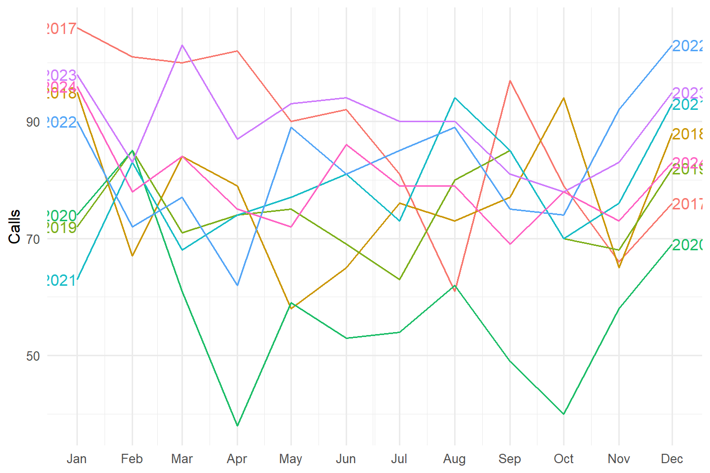
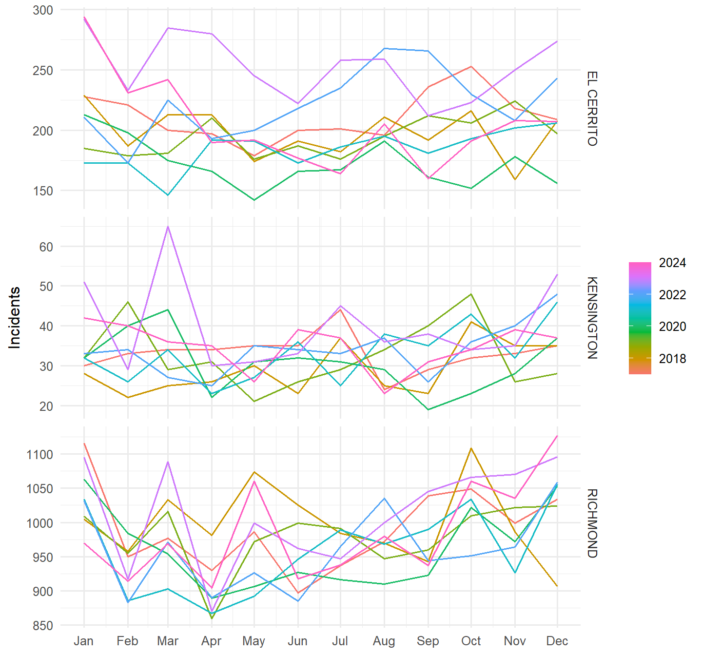
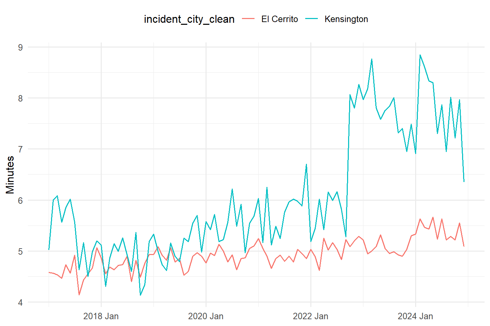
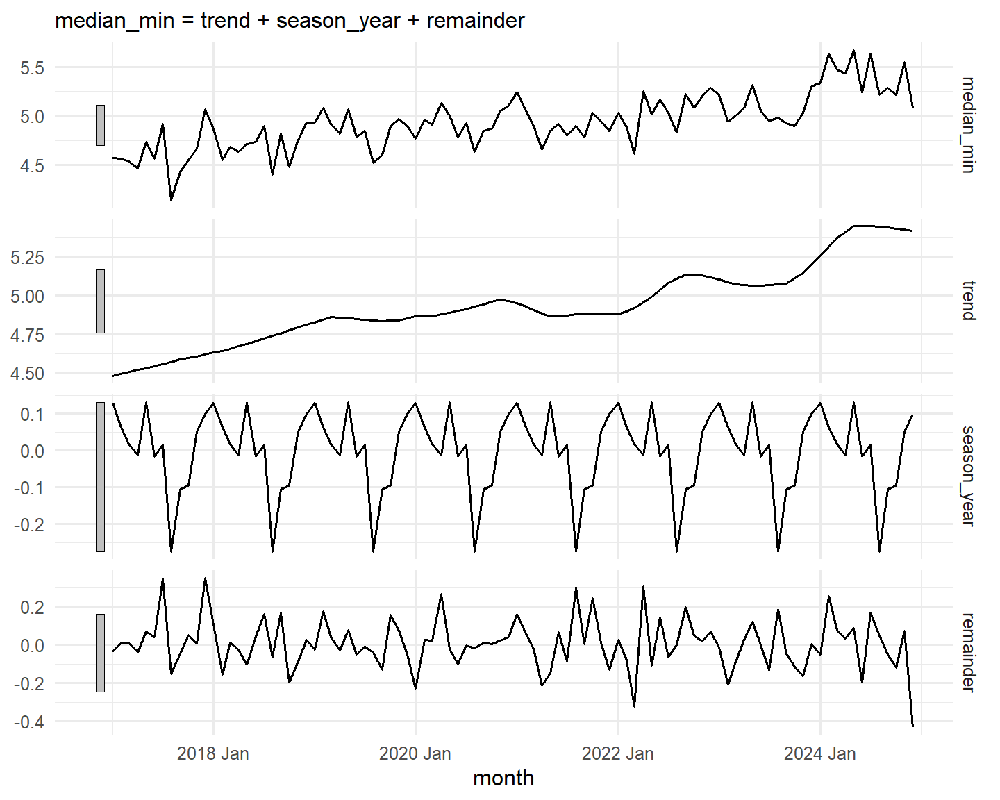

| Department | Station | 2017 | 2018 | 2019 | 2020 | 2021 | 2022 | 2023 | 2024 | 2025* |
|---|---|---|---|---|---|---|---|---|---|---|
| El Cerrito FD | 51 | 2,233 | 2,200 | 2,239 | 2,306 | 2,381 | 2,569 | 2,802 | 2,344 | 563 |
| El Cerrito FD | 52 | 509 | 503 | 618 | 450 | 523 | 608 | 679 | 567 | 156 |
| El Cerrito FD | 55 | 612 | 549 | 612 | 557 | 619 | 658 | 787 | 687 | 159 |
| Richmond FD | 61 | 951 | 973 | 970 | 957 | 982 | 960 | 1,047 | 1,117 | 236 |
| Richmond FD | 62 | 2,047 | 2,204 | 2,069 | 2,009 | 1,762 | 1,634 | 1,732 | 1,713 | 375 |
| Richmond FD | 63 | 514 | 537 | 732 | 646 | 685 | 732 | 728 | 717 | 162 |
| Richmond FD | 64 | 1,787 | 2,013 | 2,189 | 2,170 | 2,285 | 2,202 | 2,445 | 2,555 | 589 |
| Richmond FD | 66 | 1,953 | 2,211 | 2,153 | 2,147 | 2,121 | 1,884 | 1,703 | 1,622 | 526 |
| Richmond FD | 67 | 2,478 | 2,524 | 2,752 | 2,582 | 2,419 | 2,578 | 2,898 | 2,708 | 717 |
| Richmond FD | 68 | 2,026 | 2,005 | 2,316 | 2,371 | 2,519 | 2,409 | 2,406 | 2,641 | 673 |
El Cerrito Fire Department Incident Data, 2017–2025
Calls, response times, mutual aid, and workload, from the department’s incident records
Summary
This report describes El Cerrito Fire Department incident records from January 2017 through April 2025, with short sections on the newer records for 2025 and 2026. It covers calls by station, how long it took the first fire truck to arrive, mutual aid between El Cerrito and its neighbors, and station workload. It states what the records show. Where the records are incomplete, the shortcoming is noted next to the numbers it affects. The data shows patterns; it does not show their causes.
The main findings:
- Response times rose over the period. In El Cerrito, the median time from dispatch to the first fire truck’s arrival rose from 4.58 minutes in 2017 to 5.38 minutes in 2024. In Kensington, it rose from 4.82 minutes in 2018 to 7.80 minutes in 2023 and 7.68 minutes in 2024. For January–April 2025, the medians were 5.53 minutes (El Cerrito) and 5.47 minutes (Kensington). Arrival times are recorded on only 61–66% of El Cerrito fire-unit records.
- In Kensington, Station 55 was first on scene less often in 2023 and 2024. Its share of first arrivals was 88–94% from 2017 to 2022, then 81% in 2023 and 86% in 2024.
- About a quarter of El Cerrito station hours were spent outside El Cerrito and Kensington. From 2017 to April 2025, 24.6% of the hours units from Stations 51, 52, and 55 spent on incidents were outside the two communities, most of it in Richmond.
- Another department’s truck rarely arrived first in El Cerrito or Kensington. This happened in 1.0% of El Cerrito emergencies and 1.2% of Kensington emergencies. The count is limited by missing Richmond arrival times.
- Some changes in the counts reflect how calls were coded. A spike in code 900 “Special incident type, other” (575 incidents in 2023) and a shift among three codes for the same kind of medical assist call affect the call-type trends.
Battalion Chief Jose Castrejon answered questions about the data in emails of September 23 and 24, 2026. His explanations are cited where they apply.
The data
Sources
The analysis uses five sources:
- Original export (main source). A National Fire Incident Reporting System (NFIRS) export, one row per responding unit, January 2017 through March or April 2025: 163,384 rows. It includes three departments: El Cerrito (FDID 07040, which also serves Kensington), Richmond (07095), and Albany (01010).
- New NFIRS file. El Cerrito only, one row per incident, calendar years 2023–2025: 11,904 rows.
- NERIS file. El Cerrito only, from the new National Emergency Response Information System, February 1 to about September 23, 2026: 4,781 rows.
- City dashboard reports for 2025 (NFIRS) and 2026 (NERIS), generated September 23, 2026.
- Emails from Battalion Chief Castrejon, September 23 and 24, 2026.
Unless a section says otherwise, the numbers come from the original export.
How the records were prepared
Stations were renumbered. Stations 71, 72, and 65 became Stations 51, 52, and 55. The Fire Department said the change was made in the dispatch system on April 1, 2023, which matches the data. This report uses the new numbers for all years.
Ambulances are left out. The Fire Department explained that ambulances are provided through AMR, that “M” units are ambulances, and that El Cerrito Fire does not transport patients. Ambulance and basic life support units (apparatus types 75 and 76) are removed from all counts, response times, and hours. The same rule applies to all three departments. This removed 5,078 El Cerrito rows, 1,454 Albany rows, and 2 Richmond rows.
Some records were excluded or treated as missing.
- Blank times. Blank times in the old system were stored as the date December 31, 1899. These are treated as missing. The Fire Department does not know why the old system did this.
- Negative response times. Five incidents with negative response times are excluded. The Fire Department explained that some incidents do not come through 911, for example when a crew is flagged down.
Each report has its own ID. Incident numbers repeat across years and across departments. Richmond’s numbers carry no year prefix. Each report is therefore identified by its database ID, which is unique to one department’s report.
Two ways to count: by station and by location
Tables in this report use one of two scopes, and each table says which:
- Station-scoped tables count every call a station’s units went to, wherever it was.
- Location-scoped tables count every call at a place (El Cerrito, Kensington, or Richmond), whichever department responded.
Station 55’s home area is Kensington and El Cerrito. For Stations 51 and 52, the home area is El Cerrito.
Reports and emergencies
When two departments respond to the same emergency, each files its own report, under its own number. Nothing in the export links the two. For the response-time and mutual aid sections, reports at the same place within 10 minutes of each other were merged into one emergency (see Linking reports). The “response time” of an emergency is the time from the first unit dispatched to the first fire truck arriving, from any department. A call canceled en route (code 611) does not count as an arrival.
Response time: two definitions
This report measures response time from unit dispatch to unit arrival. The city’s dashboard measures from the moment a 911 call reaches the public safety answering point (CHP, Richmond Police, or Albany Police dispatch) to arrival. The Fire Department described this clock. The city’s figures start earlier, so the two cannot be compared directly. Times in the tables are in decimal minutes: 5.50 minutes is 5 minutes 30 seconds.
Calls by station
*2025 covers January–April for El Cerrito stations (Station 51 through April 30; Stations 52 and 55 through March 31) and January–March for Richmond.
Station 51 answered the most calls of the three El Cerrito stations each year, 2,200 to 2,802. All three El Cerrito stations reached their highest counts in 2023. Part of the 2023 peak comes from code 900 incidents (see Trends and seasonal patterns). Richmond stations are shown for context. Albany is not shown because its stations are outside the station analysis.
Response times
All tables in this section are location-scoped. They show the first fire truck from any department (see Reports and emergencies).
NoteData shortcomings for response times
- Missing arrival times. Only 61–66% of El Cerrito fire-unit rows have an arrival time, depending on the year. It is not known whether the missing rows differ from the rest.
- Richmond has no arrival times in 2018 or 2022–2025. It has partial coverage (37–65% of rows) in 2017 and 2019–2021.
- Unreviewed long times. 43 station-scoped home calls (0.10%) show response times over 30 minutes, up to 208 minutes. They were not reviewed one by one and are included. Medians are little affected by a few extreme values.
- 2025 is partial: January–April only.
El Cerrito and Kensington, by year
| Year | Emergencies | Median | 90th percentile | Emergencies | Median | 90th percentile |
|---|---|---|---|---|---|---|
| 2017 | 1,994 | 4.58 | 6.97 | 353 | 5.45 | 8.00 |
| 2018 | 1,899 | 4.72 | 7.12 | 314 | 4.82 | 7.14 |
| 2019 | 1,967 | 4.87 | 7.31 | 346 | 5.13 | 7.64 |
| 2020 | 1,796 | 4.90 | 7.38 | 368 | 5.53 | 7.82 |
| 2021 | 1,904 | 4.92 | 7.81 | 382 | 5.83 | 8.90 |
| 2022 | 2,170 | 5.05 | 7.72 | 355 | 6.38 | 10.38 |
| 2023 | 2,268 | 5.08 | 7.90 | 395 | 7.80 | 11.03 |
| 2024 | 1,908 | 5.38 | 8.35 | 377 | 7.68 | 10.79 |
| 2025* | 483 | 5.53 | 8.63 | 107 | 5.47 | 8.01 |

In El Cerrito, the median rose every year from 2017 to 2024: from 4.58 to 5.38 minutes. Over the same period, the 90th percentile rose from 6.97 to 8.35 minutes. In Kensington, the median was 4.82 minutes in 2018, then rose each year to 7.80 minutes in 2023; it was 7.68 minutes in 2024. For January–April 2025, the Kensington median was 5.47 minutes, based on 107 emergencies.
Home medical calls
| Year | Emergencies | Median | 90th percentile | Emergencies | Median | 90th percentile |
|---|---|---|---|---|---|---|
| 2017 | 888 | 4.37 | 6.47 | 177 | 5.28 | 7.67 |
| 2018 | 756 | 4.42 | 6.57 | 161 | 4.72 | 6.95 |
| 2019 | 756 | 4.57 | 6.70 | 163 | 4.92 | 6.58 |
| 2020 | 558 | 4.62 | 6.76 | 192 | 5.40 | 7.13 |
| 2021 | 782 | 4.63 | 6.88 | 174 | 5.52 | 8.07 |
| 2022 | 809 | 4.83 | 7.04 | 176 | 6.29 | 9.27 |
| 2023 | 907 | 4.75 | 7.09 | 166 | 7.67 | 10.03 |
| 2024 | 761 | 5.17 | 7.63 | 184 | 7.83 | 10.08 |
| 2025* | 199 | 5.32 | 8.09 | 58 | 5.33 | 7.49 |
Home medical calls show the same pattern. In El Cerrito, the median rose from 4.37 minutes (2017) to 5.17 minutes (2024). In Kensington, it rose from 4.72 minutes (2018) to 7.83 minutes (2024).
Check: code 900 calls
Code 900 “Special incident type, other” calls rose sharply in 2022–2024 (see Trends and seasonal patterns). Table 4 repeats Table 2 without them.
| Year | Emergencies | Median | 90th percentile | Emergencies | Median | 90th percentile |
|---|---|---|---|---|---|---|
| 2017 | 1,994 | 4.58 | 6.97 | 353 | 5.45 | 8.00 |
| 2018 | 1,899 | 4.72 | 7.12 | 313 | 4.82 | 7.14 |
| 2019 | 1,966 | 4.87 | 7.31 | 346 | 5.13 | 7.64 |
| 2020 | 1,796 | 4.90 | 7.38 | 368 | 5.53 | 7.82 |
| 2021 | 1,903 | 4.92 | 7.81 | 382 | 5.83 | 8.90 |
| 2022 | 2,124 | 5.02 | 7.66 | 355 | 6.38 | 10.38 |
| 2023 | 2,149 | 5.00 | 7.72 | 395 | 7.80 | 11.03 |
| 2024 | 1,863 | 5.32 | 8.33 | 377 | 7.68 | 10.79 |
| 2025* | 482 | 5.54 | 8.64 | 107 | 5.47 | 8.01 |
Leaving out code 900 calls changes the El Cerrito medians by 0.1 minute or less and the Kensington medians not at all. The rise in response times does not come from these calls.
Check: response time by call type
Table 2 and Table 3 report response time across all calls combined. If the mix of call types changed over this period, a rise in the combined median could partly reflect that shift rather than calls themselves taking longer. Table 4B checks this directly, for the four largest call categories.
| Call type | El Cerrito (2017) | El Cerrito (2024) | Kensington (2018) | Kensington (2024) |
|---|---|---|---|---|
| False alarm/false call | 4.78 | 5.47 | 5.57 | 7.28 |
| Good intent call | 4.53 | 4.90 | 4.63 | 7.75 |
| Medical emergency (home) | 4.37 | 5.17 | 4.72 | 7.83 |
| Service call | 5.40 | 5.77 | 4.89 | 7.62 |
Every one of the four largest call categories got slower in both cities, not just the all-call combined figure. This does not rule out every possible contribution from the changing call mix, but it means the rise is not solely, or even mainly, an effect of which kinds of calls make up the total — the slowdown shows up within categories whose share of all calls stayed roughly stable (home medical calls, for example), not only in categories that grew as a share of the total.
Data shortcomings: some category/year cells behind this table have small counts (as few as 5 emergencies for a Kensington category in some years), so individual cells should not be read as precise figures on their own; the pattern across all four categories is the more reliable finding.
Kensington: whose truck arrived first
| Year | Station 55 | Station 51 | Station 52 | Richmond FD | Other |
|---|---|---|---|---|---|
| 2017 | 89.5 | 2.8 | 7.3 | 0.0 | 0.3 |
| 2018 | 93.9 | 1.0 | 5.1 | 0.0 | 0.0 |
| 2019 | 91.0 | 2.5 | 4.8 | 1.7 | 0.0 |
| 2020 | 88.4 | 1.6 | 2.7 | 7.0 | 0.3 |
| 2021 | 88.8 | 2.3 | 5.5 | 3.1 | 0.3 |
| 2022 | 89.0 | 4.2 | 6.8 | 0.0 | 0.0 |
| 2023 | 81.4 | 9.8 | 8.6 | 0.0 | 0.3 |
| 2024 | 86.0 | 7.4 | 6.6 | 0.0 | 0.0 |
| 2025* | 90.7 | 2.8 | 6.5 | 0.0 | 0.0 |
Station 55 is in Kensington. From 2017 to 2022, its unit arrived first at 88–94% of Kensington reports. In 2023 that share was 81.4%, and Station 51’s share rose to 9.8%. In 2024 the shares were 86.0% and 7.4%. These are the same years Kensington response times rose (Table 2). The records do not show why the first-arriving station changed.
Data shortcomings:
- The Richmond column shows 0% in 2018 and 2022–2025 because Richmond arrival times are missing in those years, not necessarily because no Richmond truck arrived first.
- This table counts reports, not merged emergencies, and uses only reports with an arrival time.
El Cerrito, Kensington, and Richmond compared
Richmond response times can be measured only in 2017, 2019, 2020, and 2021. Table 6 compares the three communities for those four years combined.
| Call type | n | Median | 90th pct. | n | Median | 90th pct. | n | Median | 90th pct. |
|---|---|---|---|---|---|---|---|---|---|
| Medical emergency (home) | 2,984 | 4.53 | 6.70 | 706 | 5.30 | 7.43 | 16,319 | 5.90 | 9.03 |
| Service call | 2,124 | 5.24 | 8.18 | 318 | 5.96 | 9.31 | 1,094 | 6.33 | 10.31 |
| False alarm/false call | 738 | 5.00 | 7.28 | 139 | 5.60 | 7.71 | 1,490 | 5.83 | 8.98 |
| EMS assist | 533 | 4.75 | 7.12 | 25 | 6.65 | 9.89 | 287 | 6.10 | 10.13 |
| Good intent call | 406 | 4.82 | 7.24 | 88 | 5.32 | 8.06 | 1,095 | 5.82 | 8.83 |
| Hazardous condition, no fire | 318 | 5.40 | 8.03 | 118 | 5.60 | 8.77 | 634 | 6.25 | 9.58 |
| Fire, other (vehicle/vegetation/outside) | 176 | 4.60 | 6.82 | 12 | 5.15 | 6.81 | 2,334 | 5.80 | 8.98 |
| Medical emergency (vehicle accident) | 155 | 4.05 | 6.65 | 14 | 5.30 | 8.20 | 1,462 | 5.52 | 8.86 |
| Rescue & EMS | 92 | 4.83 | 8.42 | 12 | 5.54 | 9.50 | 262 | 6.00 | 10.22 |
| Confined fire | 77 | 4.68 | 7.09 | 9 | 5.48 | 7.53 | 167 | 5.17 | 8.19 |
| Structure fire | 34 | 4.76 | 6.59 | 5 | 6.53 | 9.78 | 193 | 5.97 | 11.08 |
| Severe weather/natural disaster | 7 | 6.27 | 12.07 | 2 | 0.04 | 0.07 | 11 | 8.73 | 11.03 |
| Overpressure/explosion, no fire | 6 | 4.79 | 7.88 | — | — | — | 15 | 6.02 | 11.39 |
| Special incident type | 6 | 4.53 | 6.84 | — | — | — | 8 | 8.28 | 10.07 |
| EMS, other/unspecified | 5 | 4.73 | 5.97 | 1 | 5.08 | 5.08 | 37 | 5.93 | 8.67 |
For home medical calls in these four years, the median was 4.53 minutes in El Cerrito (2,984 emergencies), 5.30 minutes in Kensington (706), and 5.90 minutes in Richmond (16,319).
Data shortcomings:
- Richmond arrival times are recorded on only 37–65% of Richmond rows in these years.
- Rows with fewer than about 20 emergencies are too few to compare. This includes Kensington’s “Severe weather/natural disaster” row: 2 emergencies, median 0.04 minutes.
Mutual aid
Neighboring fire departments help each other. Automatic aid is sent under a standing agreement; mutual aid is requested for a specific incident. This section describes what the records show about help between El Cerrito, Kensington, Richmond, and Albany. It uses the original export, January 2017 to April 2025.
How departments recorded aid
Each report carries an aid code. Table 7 shows the reports located in El Cerrito and Kensington, by department and aid code.
| City | Department | Total | None | Automatic Aid Given | Automatic Aid Received | Mutual Aid Given | Mutual Aid Received |
|---|---|---|---|---|---|---|---|
| El Cerrito | El Cerrito FD | 20,836 | 18,665 | 661 | 1,486 | 10 | 14 |
| El Cerrito | Richmond FD | 1,684 | 340 | 1,223 | 81 | 39 | 1 |
| El Cerrito | Albany FD | 103 | 25 | 0 | 0 | 78 | 0 |
| Kensington | El Cerrito FD | 3,370 | 290 | 3,032 | 39 | 9 | 0 |
| Kensington | Richmond FD | 203 | 53 | 145 | 4 | 1 | 0 |
| Kensington | Albany FD | 25 | 10 | 0 | 0 | 15 | 0 |
Some notes on how these codes were used:
- Kensington calls are coded “automatic aid given.” El Cerrito coded 3,032 of its 3,370 Kensington reports this way. The Fire Department explained that this was the old system’s way of tracking how many incidents happened in Kensington, so these are not help given to another department. The city’s 2025 “automatic aid given” totals also include Kensington calls.
- El Cerrito marked 1,500 of its El Cerrito reports “aid received,” meaning another department also came.
- The code is sometimes “automatic aid given” at an El Cerrito address. El Cerrito coded 661 reports located in El Cerrito this way. Of these, 588 carry El Cerrito’s ZIP code, 94530, so they are not Kensington calls with El Cerrito addresses. By year: 229 (2017), 139 (2018), then 19 to 63 a year. The meaning of these records is not documented.
Linking reports
Because each department files its own report, the analysis links reports by location and time. Two reports in the same city with alarm times within 10 minutes are treated as one emergency.
| City | No matching report | One matching report | Two or more |
|---|---|---|---|
| El Cerrito | 1,046 | 444 | 10 |
| Kensington | 38 | 1 | 0 |
| Minutes between alarm times | Report pairs |
|---|---|
| 1 or less | 34 |
| 1–3 | 217 |
| 3–5 | 155 |
| 5–10 | 59 |
| 10–20 | 28 |
| 20–30 | 25 |
| 30–60 | 57 |
For matched pairs, the median gap between alarm times was 2.9 minutes, and most gaps were 1 to 5 minutes. The count drops off after 10 minutes, which supports the 10-minute window.
Data shortcomings:
- Most “aid received” reports have no partner report. 1,046 of the 1,500 El Cerrito “aid received” reports (70%) have no matching Richmond or Albany report. The helping department may have been one that is not in this export, such as Contra Costa County Fire. That has not been verified.
- Chance matches are possible. El Cerrito averages about seven calls a day, so an unrelated report can fall inside the 10-minute window by chance. A rough estimate is about 1 time in 10.
Reports versus emergencies
After linking, the reports at each location reduce to a smaller number of emergencies.
| City | Reports | Emergencies | Host dept. only | Host and another dept. | Another dept. only | Partner report not found | Not found, % |
|---|---|---|---|---|---|---|---|
| El Cerrito | 21,967 | 20,972 | 19,283 | 980 | 709 | 713 | 3.4 |
| Kensington | 3,533 | 3,522 | 3,315 | 11 | 196 | 20 | 0.6 |
| Richmond | 103,312 | 98,971 | 92,822 | 4,246 | 1,903 | 1,536 | 1.6 |
The “host” department is El Cerrito for El Cerrito and Kensington, and Richmond for Richmond.
- El Cerrito: 980 emergencies involved both El Cerrito and another department. 709 involved only another department’s report.
- Kensington: 11 involved both, and 196 involved only another department.
- “Partner report not found”: the host department marked another department as helping, but no linked report was found. This is 3.4% of El Cerrito emergencies. For these, the other department’s arrival time is unknown.
Which department’s truck arrived first
| City | Own department | Other department | No arrival recorded |
|---|---|---|---|
| El Cerrito | 16,201 (77.3%) | 218 (1%) | 4,553 (21.7%) |
| Kensington | 2,962 (84.1%) | 42 (1.2%) | 518 (14.7%) |
| Richmond | 24,280 (24.5%) | 3,097 (3.1%) | 71,594 (72.3%) |
In El Cerrito, El Cerrito’s own truck arrived first in 77.3% of emergencies and another department’s truck in 1.0%. In Kensington, the figures were 84.1% and 1.2%. The remainder, 21.7% in El Cerrito and 14.7% in Kensington, have no arrival time recorded. Richmond’s 72.3% with no arrival recorded reflects the missing Richmond arrival times.
| Year | Own dept. | Other dept. | Own dept. | Other dept. | El Cerrito FD | Richmond FD |
|---|---|---|---|---|---|---|
| 2017 | 1,993 | 1 | 353 | 0 | 61.1 | 38.2 |
| 2018 | 1,898 | 1 | 314 | 0 | 63.8 | 0.0 |
| 2019 | 1,910 | 70 | 345 | 6 | 65.2 | 48.2 |
| 2020 | 1,718 | 95 | 345 | 25 | 62.3 | 65.2 |
| 2021 | 1,857 | 47 | 371 | 11 | 66.1 | 36.7 |
| 2022 | 2,170 | 0 | 355 | 0 | 65.0 | 0.0 |
| 2023 | 2,267 | 1 | 395 | 0 | 61.8 | 0.0 |
| 2024 | 1,906 | 2 | 377 | 0 | 61.9 | 0.0 |
| 2025* | 482 | 1 | 107 | 0 | 65.3 | 0.0 |
Data shortcoming: another department’s truck is shown arriving first in El Cerrito in 70, 95, and 47 emergencies in 2019–2021, and 0 to 2 in other years. Kensington shows the same pattern (6, 25, and 11). The high years are years when Richmond arrival times were recorded. The low years are years when they were missing. The year-to-year differences in this column therefore cannot be read as changes in how often another department arrived first.
How much earlier? In 34 emergencies, a Richmond truck arrived first in El Cerrito and an El Cerrito truck’s arrival time was also recorded. In those cases, the El Cerrito truck arrived a median of 2.89 minutes later:
- Mean: 3.93 minutes
- Middle half: 0.98 to 5.22 minutes
- Maximum: 13.7 minutes
The data does not allow this comparison for Kensington. None of the 42 Kensington emergencies where another department arrived first has an El Cerrito arrival time.
Richmond and Albany reports with no El Cerrito report
Some Richmond and Albany “aid given” reports in El Cerrito and Kensington have no El Cerrito report within 10 minutes. These may be calls the other department handled alone.
| City | El Cerrito report within 10 min | No El Cerrito report |
|---|---|---|
| El Cerrito | 830 | 510 |
| Kensington | 19 | 142 |
| Year | El Cerrito | Kensington |
|---|---|---|
| 2017 | 1 | 0 |
| 2018 | 51 | 2 |
| 2019 | 104 | 12 |
| 2020 | 72 | 41 |
| 2021 | 88 | 22 |
| 2022 | 102 | 14 |
| 2023 | 30 | 5 |
| 2024 | 52 | 31 |
| 2025* | 10 | 15 |
| Call category | No El Cerrito report | With El Cerrito report |
|---|---|---|
| Rescue & EMS | 365 | 243 |
| Good intent call | 160 | 419 |
| Hazardous condition, no fire | 32 | 16 |
| False alarm/false call | 31 | 101 |
| Fire, other (vehicle/vegetation/outside) | 28 | 28 |
| Service call | 26 | 15 |
| Confined fire | 5 | 12 |
| Special incident type | 2 | 0 |
| Building fire | 1 | 12 |
| Overpressure/explosion, no fire | 1 | 0 |
| Severe weather/natural disaster | 1 | 2 |
| Structure fire, other | 0 | 1 |
There were 652 such reports: 510 in El Cerrito and 142 in Kensington. Richmond filed 638 and Albany 14.
- Which stations: the first-arriving Richmond truck came most often from Richmond Station 66 (405 reports) and Station 64 (216).
- What kind of call:
- 339 home medical calls (code 321).
- 139 were dispatched and canceled en route (code 611). These are not arrivals.
- Smaller numbers of hazards (32), false alarms (31), outside fires (28), and service calls (26).
- Five confined fires and one building fire. Of the 13 building fires in these reports, 12 also had an El Cerrito report.
Data shortcoming: of the 142 Kensington reports, 95 carry ZIP code 94805 and 45 carry 94706. Only one carries 94707, and Kensington’s usual ZIP codes are 94707 and 94708. The city label on these reports may be wrong. This has not been verified.
El Cerrito station hours outside El Cerrito and Kensington
This part is station-scoped: it covers the hours units from Stations 51, 52, and 55 spent on incidents, wherever the incidents were. “Hours” means time from dispatch to clear for each unit. It excludes three groups of records:
- Ten records of about 24 hours. The Fire Department said one possible reason is dispatchers clearing their board at shift change; this is not confirmed.
- Two multi-week wildland deployments in 2018.
- Records with no clear time: 1.5–10% of El Cerrito rows each year.
| Year | Hours in EC/Kensington | Hours outside | Outside, % of hours |
|---|---|---|---|
| 2017 | 973.4 | 336.8 | 25.7 |
| 2018 | 955.3 | 234.9 | 19.7 |
| 2019 | 1,017.4 | 358.5 | 26.1 |
| 2020 | 1,012.2 | 455.0 | 31.0 |
| 2021 | 1,063.3 | 470.6 | 30.7 |
| 2022 | 1,207.9 | 345.5 | 22.2 |
| 2023 | 1,238.4 | 298.7 | 19.4 |
| 2024 | 1,009.6 | 291.9 | 22.4 |
| 2025* | 284.0 | 59.2 | 17.2 |
Over the whole period, 24.6% of these hours (2,851 of 11,613) were outside El Cerrito and Kensington. By year, the share ranged from 19.4% (2023) to 31.0% (2020). Outside hours rose in 2020 and 2021, to 455 and 471 hours, from 358 in 2019. The share rose from 26.1% to 31.0% and 30.7%. The records do not show why.
| Location | Unit responses | Hours |
|---|---|---|
| Richmond | 6,587 | 2,159.7 |
| San Pablo | 659 | 233.3 |
| Orinda | 187 | 77.0 |
| Crockett | 18 | 55.1 |
| Berkeley | 112 | 50.4 |
| East Richmond Height | 135 | 48.0 |
| Rodeo | 34 | 47.8 |
| Pinole | 89 | 36.8 |
| El Sobrante | 73 | 28.9 |
| Hercules | 53 | 28.3 |
Richmond accounts for 2,160 of the 2,851 outside hours (6,587 unit responses), then San Pablo (233 hours). Location names are shown as recorded, so a few places appear under more than one spelling in the full list.
| Call type | Home area, % of hours | Outside home area, % of hours |
|---|---|---|
| Fire, other (vehicle/vegetation/outside) | 2.9 | 22.1 |
| Structure fire | 7.1 | 16.7 |
| Good intent call | 6.8 | 14.7 |
| Medical emergency (home) | 38.5 | 14.7 |
| Service call | 19.7 | 9.7 |
| Medical emergency (vehicle accident) | 2.7 | 8.8 |
| Rescue & EMS | 1.6 | 3.7 |
| Hazardous condition, no fire | 5.8 | 3.1 |
| Confined fire | 1.5 | 2.4 |
| EMS assist | 4.0 | 1.9 |
| False alarm/false call | 7.9 | 1.9 |
| Overpressure/explosion, no fire | 0.1 | 0.2 |
| Special incident type | 1.0 | 0.1 |
| EMS, other/unspecified | 0.1 | 0.0 |
| Severe weather/natural disaster | 0.3 | 0.0 |
Table 18 uses each station’s home area. For Stations 51 and 52, that area is El Cerrito, so their Kensington calls count as “outside” here. That is why the outside share is 26% here but 24.6% in Table 16. In the home area, home medical calls took the largest share of hours, 38.5%. Outside it, fires took the largest shares:
- Vegetation, vehicle, and outside fires: 22.1%
- Structure fires: 16.7%
Of the unit responses outside the home area, 36 lasted more than four hours. The longest was about 12.7 hours, at a 2019 vegetation or outside fire recorded in Oakley.
Wildland deployments. Two wildland incidents in 2018 lasted weeks: July 26 to August 25 (about 30.5 days) and August 1 to August 19 (about 18 days), both Station 51. They are kept in the counts but left out of the hours. Their dates coincide with the 2018 Mendocino Complex and Carr fires; that link is an inference and has not been confirmed.
Workload
This section is station-scoped and covers the hours units from Stations 51, 52, and 55 spent on incidents, with the exclusions described above.
| Call type | Unit responses | Median minutes | 90th percentile |
|---|---|---|---|
| Medical emergency (home) | 9,206 | 21.8 | 37.9 |
| Service call | 6,344 | 16.0 | 29.0 |
| False alarm/false call | 3,235 | 10.2 | 24.7 |
| Good intent call | 1,740 | 9.0 | 20.3 |
| Hazardous condition, no fire | 1,400 | 15.9 | 51.4 |
| Fire, other (vehicle/vegetation/outside) | 1,312 | 18.5 | 66.8 |
| EMS assist | 1,207 | 15.7 | 29.3 |
| Medical emergency (vehicle accident) | 918 | 25.7 | 52.9 |
| Structure fire | 847 | 45.6 | 161.9 |
| Confined fire | 628 | 11.5 | 40.6 |
| Rescue & EMS | 471 | 18.1 | 60.0 |
| Special incident type | 247 | 15.8 | 29.2 |
| Severe weather/natural disaster | 37 | 23.0 | 79.8 |
| Overpressure/explosion, no fire | 36 | 13.2 | 58.5 |
| EMS, other/unspecified | 22 | 16.9 | 28.9 |
The median home medical call kept a unit busy for 21.8 minutes. For structure fires, the median was 45.6 minutes and the 90th percentile was 162 minutes.
| Year | Station 51 | Station 52 | Station 55 |
|---|---|---|---|
| 2017 | 8.3 | 2.2 | 3.0 |
| 2018 | 7.9 | 1.9 | 2.4 |
| 2019 | 8.0 | 2.9 | 2.9 |
| 2020 | 8.8 | 2.3 | 2.7 |
| 2021 | 9.6 | 2.4 | 3.3 |
| 2022 | 9.7 | 2.8 | 3.3 |
| 2023 | 9.0 | 3.0 | 4.1 |
| 2024 | 7.6 | 2.4 | 3.2 |
| 2025* | 2.1 | 0.7 | 0.8 |
Station 51’s engine spent 7.6–9.7% of the hours in each year on incidents. For Stations 52 and 55, the range was 1.9–4.1%.
Data shortcomings:
- This measures incident time only. It leaves out training, inspections, maintenance, and administrative work. A low percentage does not mean a unit was idle. The city budget reports 11,725 training hours department-wide in 2023.
- 2025 covers January–April only and is not comparable with full years.
- Leap years. 2020 and 2024 are divided by 8,784 hours.
| Longest unit time (minutes) | Incidents | Percent |
|---|---|---|
| 10–15 | 1 | 1.3 |
| 20–30 | 7 | 9.3 |
| 30–45 | 10 | 13.3 |
| 45–60 | 10 | 13.3 |
| 60–90 | 10 | 13.3 |
| 90–120 | 13 | 17.3 |
| 120–180 | 11 | 14.7 |
| 180–240 | 5 | 6.7 |
| 240+ | 8 | 10.7 |
Of the 75 structure fires in El Cerrito and Kensington with complete times, 8 (10.7%) kept an El Cerrito unit busy more than four hours.
Trends and seasonal patterns
The charts and tables in this section cover January 2017 to December 2024. 2025 is left out because it is partial. Unless noted, they count incidents in El Cerrito and Kensington answered by Stations 51, 52, and 55 (fire units only).
The strength scores in Tables 22–24 come from a standard method that splits a monthly series into trend, seasonal pattern, and remainder. A score of 0 means no trend (or no seasonal pattern); 1 means a very strong one.
NoteApril 2020
Home medical calls in April 2020 were 38, compared with a typical 60 to 100 or more. The Bay Area shelter-in-place order, including Contra Costa County, began March 17, 2020 and was extended through May 3, 2020.






| Call group | Trend strength | Seasonal strength |
|---|---|---|
| All incidents | 0.74 | 0.42 |
| All other | 0.73 | 0.25 |
| False alarm | 0.17 | 0.34 |
| Good intent | 0.12 | 0.21 |
| Medical (home) | 0.65 | 0.34 |
| Service call | 0.87 | 0.31 |
Total incidents show a fairly strong trend (0.74) and a moderate seasonal pattern (0.42). Service calls show the strongest trend (0.87), and home medical calls a moderate one (0.65). False alarms and good intent calls show little trend (0.17 and 0.12).
Two call groups need care, because coding practices affect them:
Service calls. Three codes appear to have been used for the same kind of call:
- Code 311 “Medical assist, assist EMS crew” fell from 443 (2017) and 344 (2018) to 82 (2019), and 13 to 37 a year after that.
- Code 500 “Service call, other” in El Cerrito rose from 6 (2017) to 447 (2019).
- From 2024, matched code 500 records appear in the new NFIRS file as “Assist EMS Crew-NO EMS PROVIDED.”
That these are the same kind of call is an inference that has not been confirmed. If it is correct, the service call trend is mostly a change in coding. The Fire Department explained that the company officer codes each incident as what best describes what they found on arrival.
“All other.” Its trend (0.73) comes largely from code 900, shown in Table 25.

| Location | Trend strength | Seasonal strength |
|---|---|---|
| El Cerrito | 0.70 | 0.38 |
| Kensington | 0.28 | 0.31 |
| Richmond | 0.21 | 0.58 |
El Cerrito’s incident counts show a stronger trend (0.70) than Kensington’s (0.28) or Richmond’s (0.21). Richmond shows the strongest seasonal pattern (0.58). Counts do not need arrival times, so all Richmond years can be used here.


| Location | Trend strength | Seasonal strength |
|---|---|---|
| El Cerrito | 0.74 | 0.41 |
| Kensington | 0.86 | 0.17 |
Monthly median response times show a strong trend in both El Cerrito (0.74) and Kensington (0.86). Kensington has about 30 calls a month, so its monthly medians vary more from month to month. El Cerrito arrival times are recorded on 61–66% of rows.
| Incident type | 2017 | 2018 | 2019 | 2020 | 2021 | 2022 | 2023 | 2024 | 2025* |
|---|---|---|---|---|---|---|---|---|---|
| 900 Special incident type, other | 0 | 1 | 2 | 0 | 4 | 217 | 575 | 235 | 3 |
| 400 Hazardous conditions – No fire, other | 30 | 31 | 41 | 25 | 41 | 35 | 78 | 72 | 13 |
| 444 Power line down | 32 | 10 | 36 | 31 | 31 | 25 | 53 | 42 | 10 |
| 311 Medical assist, assist EMS crew | 443 | 344 | 82 | 19 | 22 | 15 | 37 | 13 | 7 |
| 322 Vehicle accident with injuries | 41 | 45 | 27 | 21 | 27 | 28 | 33 | 37 | 4 |
| 445 Arcing, shorted electrical equipment | 5 | 6 | 4 | 7 | 4 | 4 | 22 | 7 | 2 |
| 412 Gas leak (natural gas or LPG) | 17 | 16 | 21 | 12 | 19 | 22 | 20 | 22 | 5 |
| 150 Outside rubbish fire, other | 9 | 8 | 4 | 5 | 15 | 43 | 14 | 23 | 3 |
| 113 Cooking fire, confined to container | 4 | 14 | 12 | 14 | 6 | 10 | 13 | 10 | 5 |
| 118 Trash or rubbish fire in a structure, no flame damage | 7 | 19 | 10 | 17 | 5 | 6 | 12 | 7 | 7 |
*2025 covers January–April only.
Code 900. Code 900 “Special incident type, other” was used 0 to 4 times a year from 2017 to 2021, then:
| Year | Code 900 incidents |
|---|---|
| 2022 | 217 |
| 2023 | 575 |
| 2024 | 235 |
| 2025 (partial year) | 3 |
It accounts for most of the 2022–2024 rise in “All other” and for much of the 2023 peak in total incidents. In-jurisdiction incidents with and without code 900:
| Year | All incidents | Without code 900 |
|---|---|---|
| 2022 | 3,077 | 2,860 |
| 2023 | 3,498 | 2,923 |
| 2024 | 2,875 | 2,640 |
For comparison, 2017–2021 ranged from 2,429 to 2,715. What these calls were is not documented.
After April 2025: the new record systems
The original export ends in March or April 2025. Two newer files cover El Cerrito only, at the incident level: the new NFIRS file (2023–2025) and the NERIS file (February–September 2026). The Fire Department said of the new files, “This is all of the new data available in the new system.” Because they have no unit-level times, the data does not allow response times, hours, or station workload to be carried past April 2025 on the same basis as the sections above.
Old and new files for the same years
The Fire Department said records for the past three years were transferred to the new system. For January 2023 to March 2025, the two files were matched by incident number.
| Period | In both files | Old file only | New file only |
|---|---|---|---|
| 2023 | 3,880 | 796 | 19 |
| 2024 | 3,212 | 804 | 19 |
| 2025, January–March | 498 | 210 | 267 |
- Matched incidents agree completely on incident-type series and alarm time.
- Most old-file-only incidents are code 900 “special incident” calls (about 1,080) and service calls (about 360).
- The new file’s totals run about 800 a year lower than the old export’s for 2023 and 2024.
- The early-2025 match is weaker; the reason is not known.
The 2023-to-2024 drop. El Cerrito incidents fell from 2023 to 2024 in both files:
- Old export: 4,676 to 4,016 (−14%).
- New file: 3,899 to 3,231 (−17%).
The cause is not known. The Fire Department said emergency services have spikes from time to time for unknown reasons. Part of the drop in the new file’s “Service call, other” category is a relabeling: matched records carry that label in 2023 and “Assist EMS Crew-NO EMS PROVIDED” in 2024.
Dispatch change
The Fire Department said dispatch changed from sending a unit based on geographic area to sending the closest unit based on vehicle location (AVL). It gave no date. In the new file, zone codes change and the incident number format changes in May 2025, so the change appears to have come around May 2025. That timing is an inference. It falls mostly after the original export ends, so the data does not allow its effect on response times to be measured.
City dashboard figures
90th percentile response time. The city’s dashboard reports this measured from 911 call receipt to arrival, a different definition from this report’s (see Response time: two definitions).
| Station 51 | Station 52 | Station 55 | Overall | |
|---|---|---|---|---|
| 2025, recomputed from new file | 8:20 | 10:01 | 9:55 | 9:21 |
| 2025, dashboard | 8:12 | 10:01 | 9:58 | 9:18 |
| 2026, recomputed from NERIS file | 8:22 | 10:29 | 10:47 | 9:30 |
| 2026, dashboard | 8:24 | 10:30 | 11:12 | 9:39 |
- 2025 coverage is thin. In the new file, the 911-to-arrival field is blank for every 2023 and 2024 incident. For 2025, it is filled for 790 of 3,331 incidents, almost all in October–December. The recomputed 2025 figures come from those 790 incidents. The close match suggests the dashboard’s 2025 figure also rests on roughly October–December 2025 only; that is an inference.
- 2026 matches only approximately. The dashboard’s method is not known, and its station totals (2,294) are larger than the file’s 2,084 incidents.
Station reliability. The Fire Department defined this as the percentage of the time the engine responded from quarters rather than while out of the station. The files have no field for it, so it cannot be recomputed. The dashboard values:
- 2025: Station 51 83.59%, Station 52 92.25%, Station 55 84.18%, overall 85.31%.
- 2026: Station 51 95.77%, Station 52 91.08%, Station 55 93.81%, overall 93.77%.
The two years come from different record systems and are not compared here.
2025 incident totals differ across dashboard pages:
- 3,331 (page 33)
- 3,330 (page 12)
- 3,628 (page 15)
- 2,463 (page 8)
The Fire Department did not know why and suggested ambulance-only responses or Richmond units running calls in El Cerrito as possibilities. This report uses 3,331, the number of distinct incident numbers in the new file.
January 2026 is missing. The new NFIRS file ends December 31, 2025 and the NERIS file begins February 1, 2026. The Fire Department said, “This was the NFIRS NERIS change.” No crosswalk between NFIRS and NERIS incident types was provided, so 2026 cannot be compared with earlier years by incident type.
What the data does not allow
- Richmond workload. Richmond time on task or busy hours for 2018 and 2022–2025. Cleared times are missing for every Richmond row in those years. The Fire Department did not know why and noted that only Richmond Fire could answer.
- Richmond response times for 2018 and 2022–2025. Arrival times are missing.
- Unit-level measures after April 2025. No unit-level response time, time on task, or station hours after March/April 2025.
- Comparing El Cerrito with Richmond after April 2025. The newer files are El Cerrito only.
- Comparing 2026 with earlier years by incident type. There is no NFIRS–NERIS crosswalk.
- January 2026. No records exist in either file.
- Station reliability. The files have no field for it.
- The city’s 911-to-arrival response times for 2023 and 2024. The field is blank.
- The first truck from any department for every El Cerrito and Kensington emergency. Not all reports can be linked, and Richmond arrival times are missing in several years.
- Street-level location. The export has city and ZIP code only.
- Causes. The data shows patterns, such as rising response times, but not the reasons for them.
Appendix: data issues log
The table lists every data issue found during the analysis. Status: Resolved (explained or fixed), Partial (partly explained), Open (not explained), Not possible (the data does not allow it).
| ID | Issue | Status | How it was handled |
|---|---|---|---|
| D1 | Stations 71/72/65 renumbered 51/52/55 | Resolved | FD: changed April 1, 2023; new numbers used for all years |
| D2 | Incident numbers repeat across years and departments | Resolved | Each report identified by database ID |
| D3 | Blank times stored as December 31, 1899 | Open | Treated as missing |
| D4 | Five negative response times | Resolved | FD: non-911 incidents; excluded |
| D5 | Response times over 30 minutes (43 home calls) | Open | Included; not reviewed one by one |
| D6 | City name spelling variants (30+) | Handled | Standardized |
| D7 | High share of El Cerrito service calls coded 500, 2019–2023 | Partial | Pattern described; see D34 |
| D8 | Richmond cleared times missing in most years | Not possible | Richmond hours not computed |
| D9 | Ten cleared times of about 24 hours | Partial | FD: possible shift-change board clearing; excluded from hours |
| D10 | Two multi-week wildland incidents, 2018 | Handled | Kept in counts; left out of hours |
| D11 | Ambulances in the data | Resolved | FD: AMR units; excluded for all departments |
| D12 | FDID 01010 is Albany Fire | Resolved | Appears in location-scoped tables only |
| D13 | One emergency can have two or more reports | Handled | Reports merged into emergencies |
| D14 | Linking reports across departments | Partial | 10-minute window; unmatched reports reported |
| D15 | 661 El Cerrito “aid given” reports located in El Cerrito | Open | Described; meaning not documented |
| D16 | Richmond reports labeled Kensington with other ZIPs | Open | Flagged; not verified |
| D17 | Richmond/Albany reports with no El Cerrito report | Handled | Summarized in Tables 13–15 |
| D18 | Richmond arrival times missing 2018, 2022–2025 | Not possible | Comparison limited to 2017, 2019–2021 |
| D19 | El Cerrito arrival times on 61–66% of rows | Flagged | Noted with every response-time table |
| D20 | No unit-level data after April 2025 | Not possible | FD: all new data available |
| D21 | 2023–2025 records moved to new system | Handled | Old and new files matched (D29) |
| D22 | City’s 911-to-arrival field mostly blank | Partial | 2025 figure rests on about 790 incidents |
| D23 | Station reliability has no source field | Not possible | Dashboard values quoted |
| D24 | Dispatch model change | Partial | About May 2025 (inference) |
| D25 | Kensington calls coded “automatic aid given” | Partial | FD: old way of tracking Kensington calls |
| D26 | Different 2025 totals on dashboard pages | Open | 3,331 used |
| D27 | Drop from 2023 to 2024 | Open | Real in both files; cause unknown |
| D28 | Old and new incident counts differ | Explained | See D29 |
| D29 | Old vs. new file match, 2023–March 2025 | Result | New file about 800 a year lower |
| D30 | January 2026 missing | Not possible | FD: NFIRS-to-NERIS change |
| D31 | No NFIRS–NERIS crosswalk | Not possible | 2026 not compared by type |
| D32 | 2026 90th percentile matches only approximately | Partial | Dashboard method unknown |
| D33 | Code 900 spike, 2022–2024 | Open | Does not explain response-time rise |
| D34 | One call type, three codes | Inference | Service call trend likely a coding change |
| D35 | Kensington first-arriving station, 2023–2024 | Finding | Cause not in the data |
| D36 | Response-time rise checked by call type (Simpson’s paradox) | Result | All four largest call categories rose in both cities; not a call-mix effect (Table 4B) |
Sources and code
- The analysis script,
el_cerrito_fire_analysis.R(revision 8, September 24, 2026), contains every step, check, and table in this report. Table captions give the script’s table numbers. - Emails from Battalion Chief Jose Castrejon, El Cerrito Fire Department, September 23 and 24, 2026.
- City of El Cerrito dashboard reports: “[NFIRS] Fire Board Report – El Cerrito Responses” (2025) and “[NERIS] … Apparatus Responses” (2026), generated September 23, 2026.